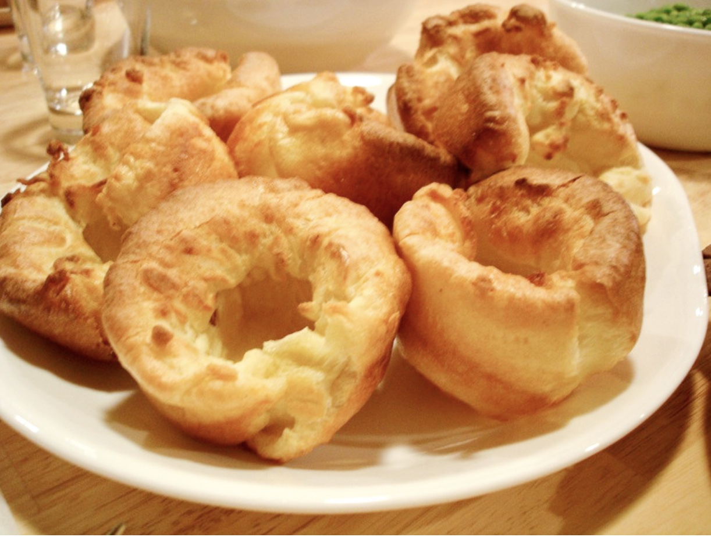

Yorkshire Pudding
One of the U.K's most famous and recognizable desserts, learn all about how to make the famous Yorkshire Pudding, Gordon Ramsay style!
Makes 8 large Yorkshire Puddings
Ingredients
- 3 large eggs
- 125g plain flour
- ½ tsp sea salt
- 150ml whole milk
- Vegetable oil
Steps:
- Beat the eggs together in a mixing bowl using a balloon whisk.
- Sift the flour with the salt, then gradually beat this into the eggs to make a smooth batter.
- Whisk in the milk until combined. Cover and leave to stand at room temperature for about 1 hour.
- Preheat the oven to 220°C/200°C fan.
- Put 2 teaspoons of vegetable oil into each compartment of two 4-hole Yorkshire pudding tins (see tip, below). If you only have one tin, you’ll have to do this and cook the Yorkshires in two batches.
- Place the tin in the oven for 12-15 minutes to heat up the oil and tins until very hot (this is important for the rise).
- Stir the batter and pour into a jug. At the oven (this is safer than carrying a tin of hot oil across the kitchen), carefully pour some batter into the middle of the oil in each hole, remembering that it is very hot. Watch out as the oil will sizzle a bit as the batter hits it.
- Put the tins straight back into the oven and bake for about 15 minutes or until the Yorkshires are well risen, golden brown and crisp. Serve immediately with your choice of roast and all the trimmings.
Gordon's pro tip: To make 14-16 smaller Yorkshire puddings, put 1 teaspoon of vegetable oil into each hole of a deep muffin tin (each cup measuring about 7cm diameter x 2.5cm deep), then heat up as described in step 2, before pouring in the batter. Bake the Yorkshires for 12-15 minutes.
Return to top Return to main page